A parallel circuit is often called a current divider for its ability to proportion—or divide—the total current into fractional parts.
To understand what this means, let’s first analyze a simple parallel circuit, determining the branch currents through individual resistors
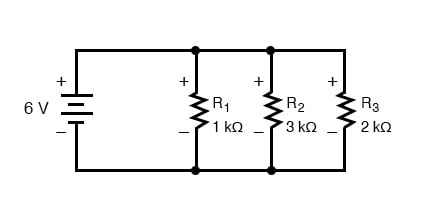
Knowing that voltages across all components in a parallel circuit are the same, we can fill in our voltage/current/resistance table with 6 volts across the top row:
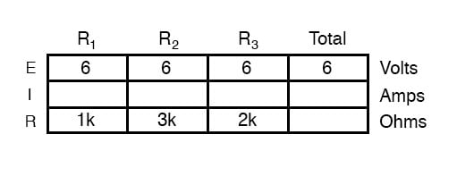
Using Ohm’s Law (I=E/R) we can calculate each branch current:
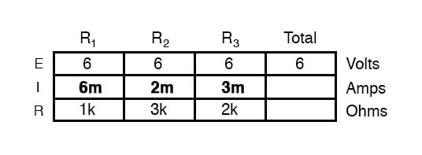
Knowing that branch currents add up in parallel circuits to equal the total current, we can arrive at total current by summing 6 mA, 2 mA, and 3 mA:
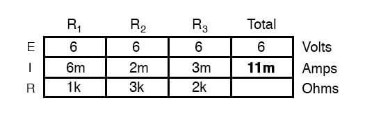
The final step, of course, is to figure total resistance. This can be done with Ohm’s Law (R=E/I) in the “total” column, or with the parallel resistance formula from individual resistances. Either way, we’ll get the same answer:
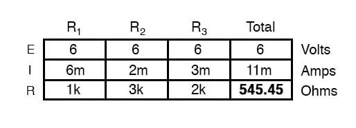
Once again, it should be apparent that the current through each resistor is related to its resistance, given that the voltage across all resistors is the same. Rather than being directly proportional, the relationship here is one of inverse proportion. For example, the current through R1 is twice as much as the current through R3, which has twice the resistance of R1.
If we were to change the supply voltage of this circuit, we find that (surprise!) these proportional ratios do not change:
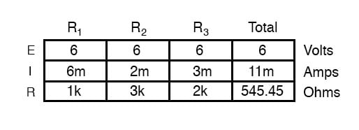
The current through R1 is still exactly twice that of R3, despite the fact that the source voltage has changed. The proportionality between different branch currents is strictly a function of resistance.
Also reminiscent of voltage dividers is the fact that branch currents are fixed proportions of the total current. Despite the fourfold increase in supply voltage, the ratio between any branch current and the total current remains unchanged:
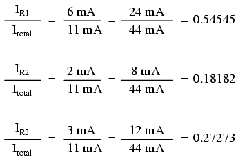
Now we can see for ourselves the point we made at the beginning of this page: A parallel circuit is often called a current divider for its ability to proportion—or divide—the total current into fractional parts.
With a little bit of algebra, we can derive a formula for determining parallel resistor current given nothing more than total current, individual resistance, and total resistance:
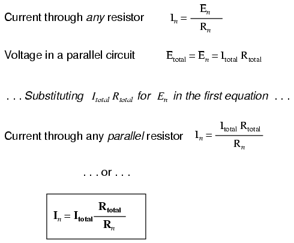
The ratio of total resistance to individual resistance is the same ratio as the individual (branch) current to the total current. This is known as the current divider formula, and it is a short-cut method for determining branch currents in a parallel circuit when the total current is known.
Using the original parallel circuit as an example, we can re-calculate the branch currents using this formula, if we start by knowing the total current and total resistance:
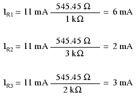
If you take the time to compare the two divider formulae, you’ll see that they are remarkably similar. Notice, however, that the ratio in the voltage divider formula is Rn (individual resistance) divided by RTotal, and how the ratio in the current divider formula is RTotal divided by Rn:
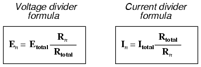
It is quite easy to confuse these two equations, getting the resistance ratios backward. One way to help remember the proper form is to keep in mind that both ratios in the voltage and current divider equations must be less than one. After all, these are divider equations, not multiplier equations! If the fraction is upside-down, it will provide a ratio greater than one, which is incorrect.
Knowing that total resistance in a series (voltage divider) circuit is always greater than any of the individual resistances, we know that the fraction for that formula must be Rn over RTotal. Conversely, knowing that total resistance in a parallel (current divider) circuit is always less than any of the individual resistances, we know that the fraction for that formula must be RTotal over Rn.
Current divider circuits also find application in electric meter circuits, where a fraction of measured current is desired to be routed through a sensitive detection device. Using the current divider formula, the proper shunt resistor can be sized to proportion just the right amount of current for the device in any given instance:
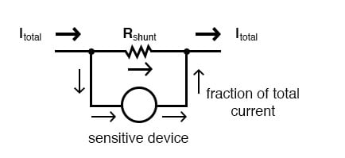
REVIEW: